Recap #6
Act 5 Act 2: He is already here. (Part 2)
Recap #6
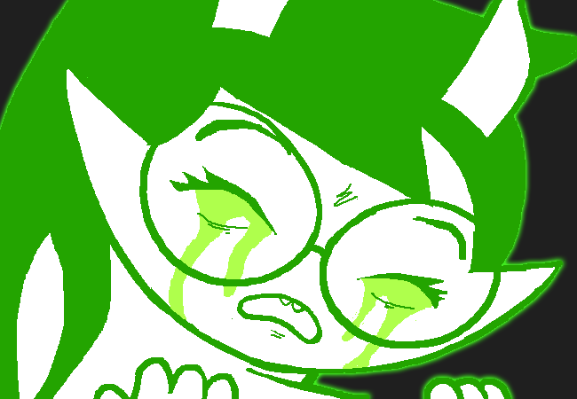
JADE’S attempt to create a rescuer has brought back someone who does not want to be here. Jadesprite remembers the destruction of Prospit, believes John died, and misses the friends she found after death. Bec’s power also leaves her unable to stop seeing the Green Sun.
Jade tries to persuade her to fight Jack. Sympathy gives way to frustration, then shouting and blows. Sharing a past has not made the two Jades understand each other.
Recap #6
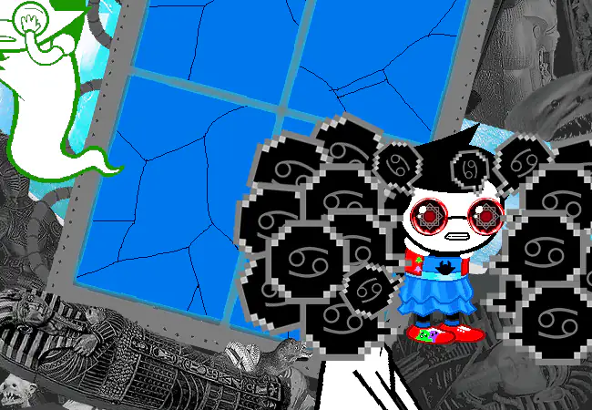
KARKAT interrupts. Jade’s argument with another version of herself sounds rather familiar to him. They apologize for their earlier hostility and begin working together on her developing plan.
Karkat relays a request from Jade’s future self: turn off the FOURTH WALL and draw it. Jade also introduces a password system: trolls must finish one conversation before starting the next. Linear conversation is now an elaborate technical achievement.
Recap #6
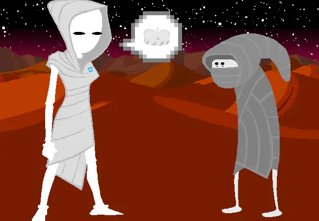
On the future Earth, the former White Queen advises PM, the new PROSPITIAN MONARCH. PM’s duties include rebuilding the kingdom, bringing down Jack, and choosing someone to wield the other royal ring.
AR prepares to demolish the command stations. Inside one of them, WV has built a fort and fallen asleep, still guarding the ring. Serenity goes for help, but her urgent blinking is lost on people without a working knowledge of firefly.
Recap #6
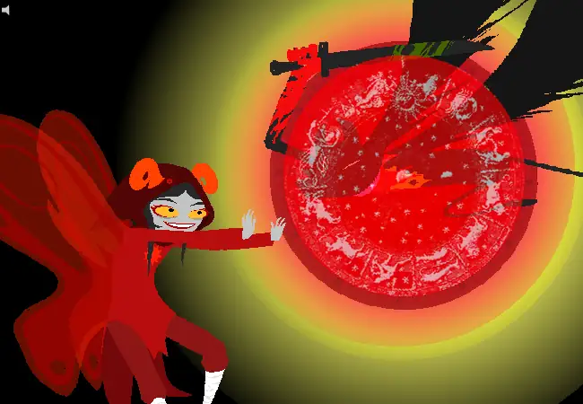
Back in the trolls’ session, Jack slaughters Derse’s dreamers. But Aradia’s dreamself lies hidden deep inside, on a QUEST COCOON. When Jack destroys Derse, she ascends to the GOD TIER and her robot body explodes.
The newly living MAID OF TIME stops Jack in a single moment. While her friends mourn the robot, Aradia is holding their demon at bay.
Recap #6
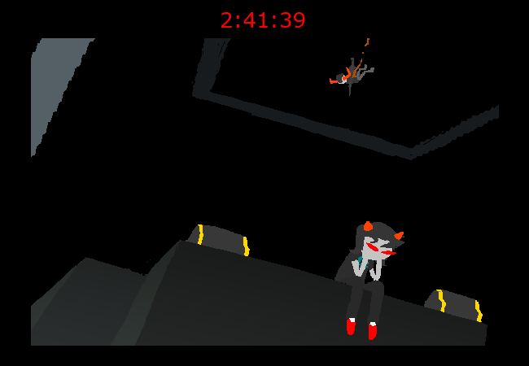
TAVROS finally confronts Vriska. She gives him a free attack, easily takes his lance, and stabs him through the chest with it. Then she drops him into the abyss.
His body lands beside Terezi, who has just left the others to grieve the doomed Dave. The violence the trolls escaped on Alternia is continuing inside their refuge.
Recap #6
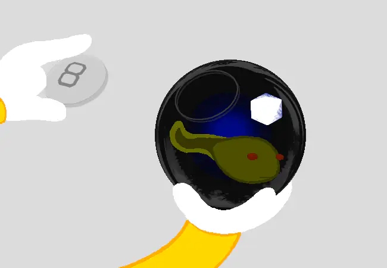
KANAYA explains Jade’s duties as the WITCH OF SPACE. Dave deploys a miniature ectobiology lab, and Jade begins breeding FROGS.
The process runs backward: promise to catch a particular frog later, then try to retrieve it now. The machine cannot remove it without causing a paradox, so it supplies genetic slime instead. Jade can combine these samples and guide mutations in the offspring. Clone first, catch later.
Recap #6
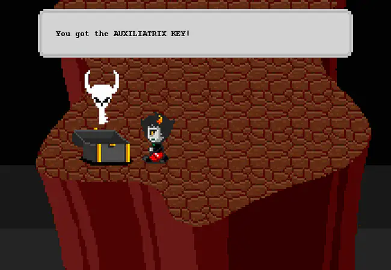
The goal is the GENESIS FROG. It will not merely populate a new universe: the frog itself IS that universe. Jade’s tiny breeding project is the central task of creation.
Kanaya has another future to protect. Her MATRIORB could hatch a new Mother Grub and let the trolls rebuild their species. Finding its key in the meteor has renewed her hope. She leaves to hatch it in the laboratory’s core.
Recap #6
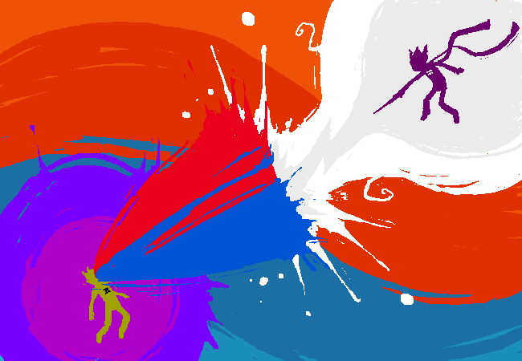
ERIDAN has reached a different conclusion: there is no hope, so he plans to find Jack and join him. He asks Feferi to come. She refuses, and Sollux fights to stop him.
The PRINCE OF HOPE wins their rematch with his wand, knocking Sollux unconscious. When Feferi attacks, Eridan kills her. Her earlier appearance as a ghost now has its terrible explanation.
Recap #6
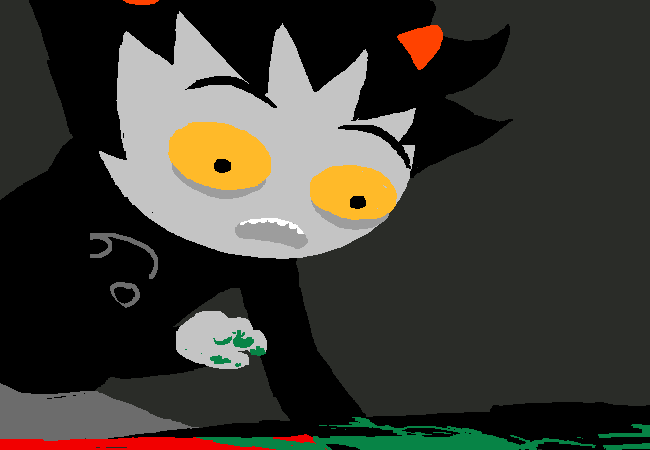
Kanaya prepares to fight back. Eridan destroys the MATRIORB before she can reach him, then blasts a hole through her and leaves.
Karkat is left with two dead friends and an unconscious Sollux. The egg that held their hope of repopulation is gone too. Hiding from Jack has not kept them safe from one another.
Recap #6
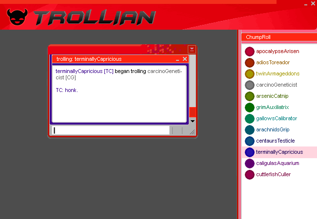
GAMZEE contacts Karkat. He is out of sopor slime, the substance he has been eating in pies, and declares that he now understands his murderous calling. He threatens to kill them all.
Karkat warns the team about both Gamzee and Eridan. Replies arrive from friends’ earlier selves, who cannot understand the catastrophe he is describing. A future Gamzee joins in simply to make the threat worse.
Recap #6
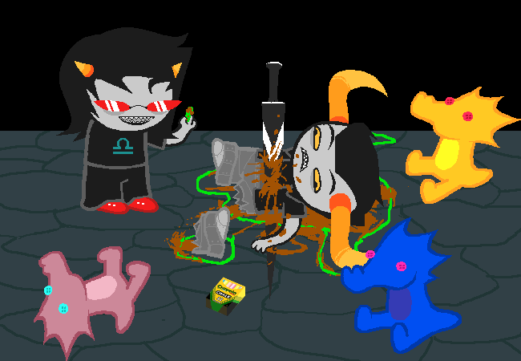
TEREZI turns Tavros’s death into a crime-scene investigation, assisted by her elite team of plush SCALEMATES. Vriska is the obvious suspect, but there is a procedure to perform.
She finds fairy dust and fingerprints on the lance. The nearby honking does not alarm her: she still thinks Gamzee is a harmless friend who needs protection from the murderer.
Recap #6
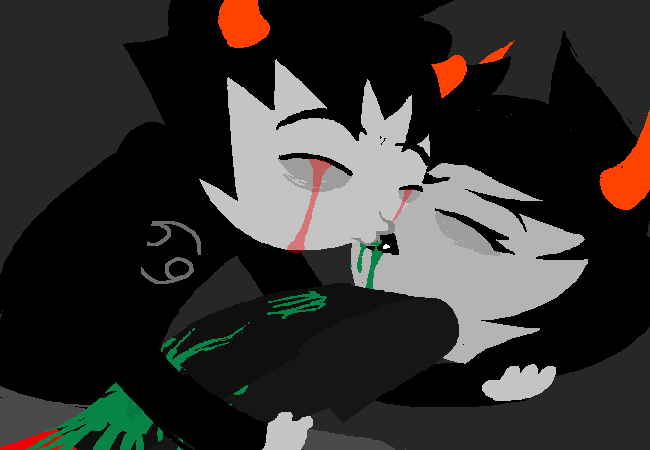
Terezi tries to revive Tavros with a kiss. Elsewhere, Karkat makes the same attempt with Kanaya.
Neither can wake as a dreamself: Jack has already killed both dreamselves. The rescue method that saved Sollux earlier cannot undo these deaths.
Recap #6
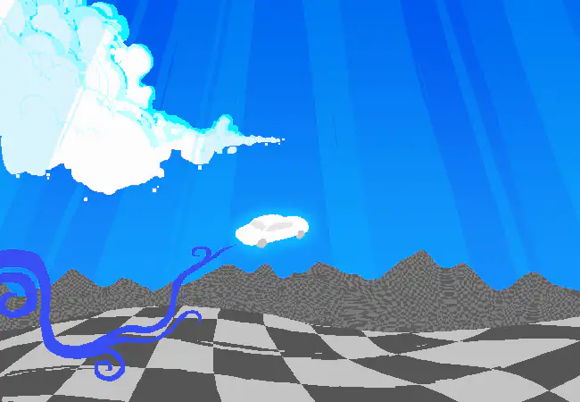
On the BATTLEFIELD, John explores with WV, whom he knows as a friendly WIZARDLY VASSAL. He finds Dad’s wallet, a note expressing Dad’s pride in him, and an absurd quantity of fatherly supplies. Among them are a car and a working laptop.
John makes the car fly with wind. Jade locates Dad and Rose’s mom together in a castle. John also lets WV keep the queen’s ring, trusting a glimpse of their future in Skaia’s clouds.
Recap #6
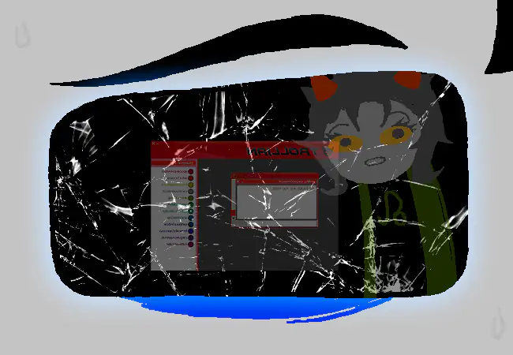
A terrified Karkat tells John this may be their last conversation from his perspective. John tries to reply and reaches an earlier, still-hostile Karkat instead.
Back in the lab, Karkat drags Sollux to safety, falls down the stairs with him, and asks EQUIUS for help. The trolls’ strongest remaining defender sets out to find Gamzee while trying to keep Nepeta, his moirail, out of danger.
Recap #6
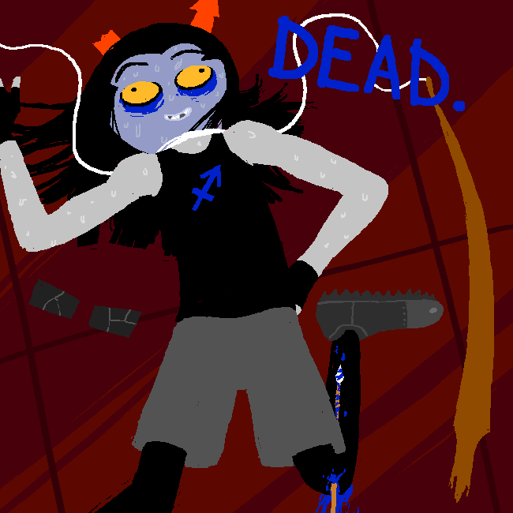
Equius finds Gamzee wearing Terezi’s glasses. Gamzee orders him to kneel. An arrow through the knee forces him down, and Gamzee strangles him with a broken bowstring.
Equius’s enormous strength does not save him. His deference to someone higher on the hemospectrum leaves him submitting to the person he came to stop. Nepeta watches from an air duct.
Recap #6
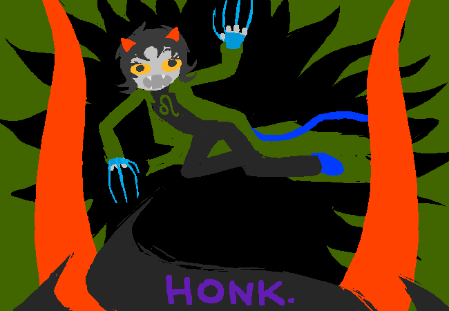
NEPETA leaps at Gamzee after witnessing her moirail’s murder. He catches her hand and uses her claws to scratch his own face, still smiling. Then he advances on her.
The attack cuts away before its conclusion. Later, his club is stained with her blood, and Terezi finds her body. Equius’s attempt to protect her has ended in another loss.
Recap #6
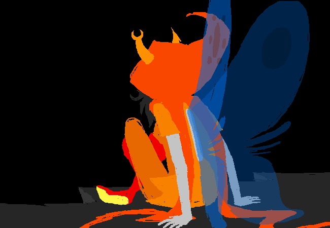
VRISKA confesses Tavros’s murder to John. She admits she could have escaped or restrained him, but killed him in anger. What frightens her now is feeling remorse for something her society would have excused.
John listens without agreeing that killing her friend was right. She still intends to face Jack, partly to protect the others and partly to prove herself. John asks her to speak to him again before she goes.
Recap #6
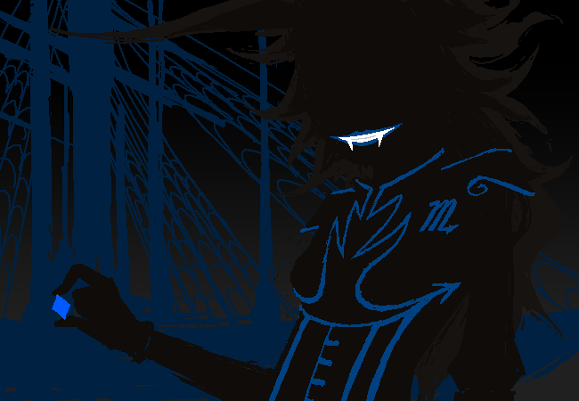
Vriska explains the troll tradition of ANCESTORS: legendary figures whose lives their descendants may choose to follow. Hers is the pirate MARQUISE SPINNERET MINDFANG, whose journal and buried treasures shaped her ambitions.
John finds a gentler parallel in Nanna and the family’s inherited prankster traditions. Vriska returns to the journal before her planned battle, looking again to an adult whose example has guided her since childhood.
Recap #6
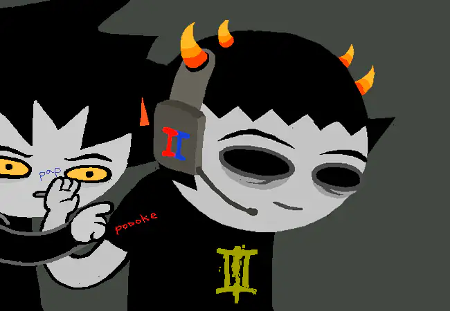
SOLLUX wakes blind after Eridan’s attack. Losing his vision has also silenced the voices of the soon-to-be-dead that haunted him. He feels unexpectedly calm, even while mourning Feferi.
He turns to Terezi for advice on living without sight. She offers to help, but their conversation ends when she notices something strange nearby: a smell growing brighter.
Recap #6
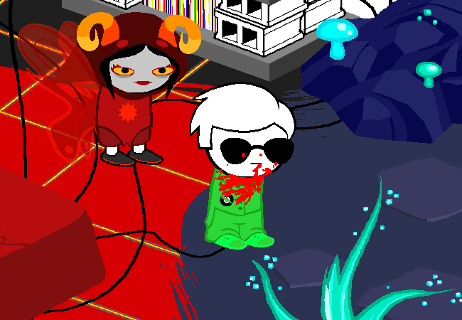
The story jumps to an apparently ordinary conversation between Dave and ARADIA, which unravels into a memory. This is the DOOMED DAVE who took the nap on his quest bed and was killed by Jack. He gradually remembers that he is dead.
Aradia explains that a DREAM BUBBLE can be an afterlife, a memory, and a meeting place for living dreamers at once. Tavros is here too. Aradia herself is alive and physically visiting them.
Recap #6
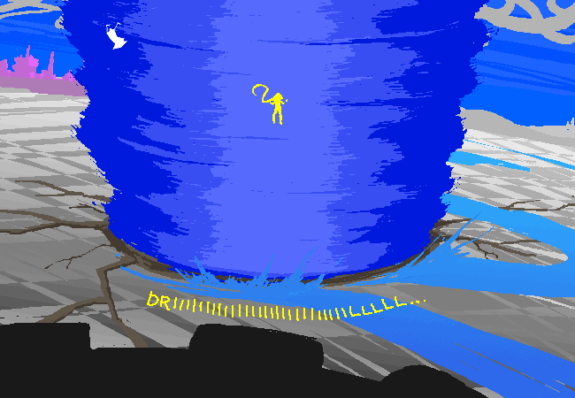
Vriska reminds John that retrieving the TUMOR cannot wait forever. He needs a way into the Battlefield’s core, and his powers can do more than provide transport.
John creates a vast drill of wind. It opens a tunnel through the planet, lifts a battleship, and shakes the castle where Dad and Mom are enjoying each other’s company.
Recap #6
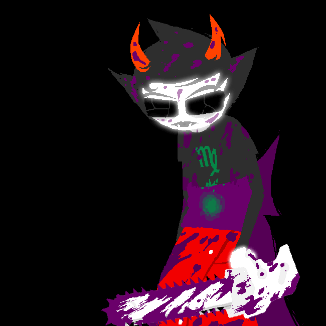
Gamzee, Eridan, and Vriska prepare for a showdown. Then KANAYA returns, her wound bandaged and her skin glowing. This is not a dreamself revival: she has become a blood-drinking RAINBOW DRINKER.
She kicks Gamzee away, punches Vriska aside, and cuts Eridan in half with her chainsaw. The threatened standoff is over almost as soon as she arrives.
Recap #6
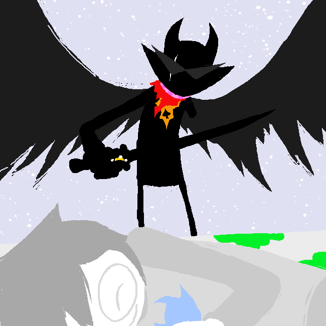
Jack’s power came with more than Bec’s abilities. When he reaches JADE, he cannot bring himself to kill her: Bec’s loyalty and love have survived inside him.
That does not make him safe. He resents these feelings and continues hunting other victims. Jade has an unusual protection that her friends and their guardians do not share.
Recap #6
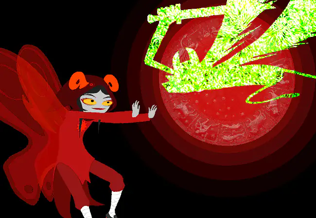
The story returns to Aradia in the trolls’ ruined session. She releases Jack and escapes before his sword can reach her. She flies into the FURTHEST RING, toward the Green Sun.
A dream bubble draws her attention. Inside are memories of the doomed Aradiabots, the army of alternate selves who helped win the trolls’ game and died afterward. She enters to help the dead find their way.
Recap #6
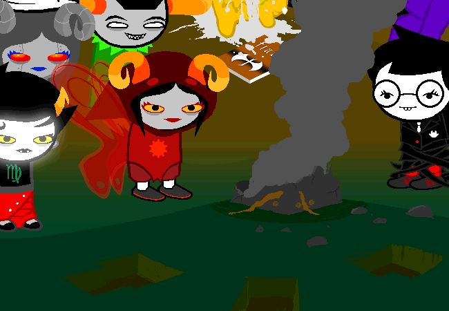
Aradia leads a gathering through shared memories. Living dreamers and ghosts can meet without occupying the same point in their personal timelines. Sollux and Jade visit; a dead Aradiabot helps explain a history the living Aradia never experienced.
They revisit the old FLARP retaliation. The injuries, ruins, and messages were not merely separate tragedies. Their manipulator used those events to make the trolls write fragments of a genetic code.
Recap #6
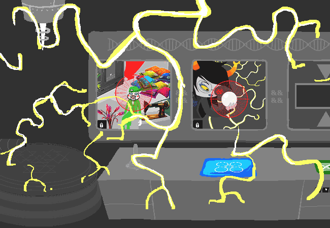
The FLARP rulebooks preserve most of the code. Another fragment comes from a doomed timeline where Gamzee went on a killing spree and wrote in his victims’ blood. An Aradiabot brought the book back to Alternia and quietly ensured that Karkat’s computer exploded, preventing that doomed branch from repeating.
Agents gather the books. On a meteor, their codes combine with ghost imprints of LIL’ CAL and the MAGIC CUE BALL to create DOC SCRATCH. The being who manipulated the trolls also arranged the conditions of his own creation.
Recap #6
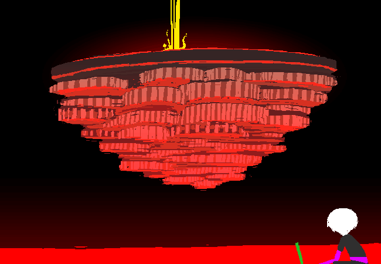
DOC SCRATCH takes over the narration and returns to Rose’s questions. He describes the SCRATCH as a hard reset that changes the conditions of the kids’ universe well before they began playing, rather than simply banishing Jack.
He warns that anyone left in the current session will cease to exist. To trigger it, someone must finish scratching the BEAT MESA with a quill from Jade’s denizen, ECHIDNA. Finding a way to survive the reset is the kids’ own problem.
Recap #6
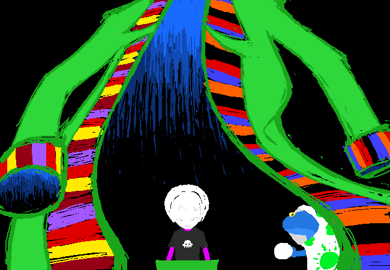
Scratch explains GOD-TIER IMMORTALITY: a god-tier player can return from death unless that death is judged HEROIC or JUST. These judgments are mysterious, not a simple promise of invulnerability.
He says he wants to die because his death will permit LORD ENGLISH to enter the universe. Rose’s plan to destroy the Green Sun could stop Jack while serving another enemy’s purpose. Scratch insists that refusing the mission would not prevent his master’s arrival.
Recap #6
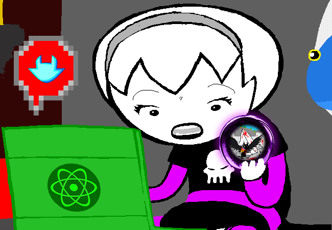
Scratch teaches Rose to read the MAGIC CUE BALL as a SEER OF LIGHT. Its first instruction is simple: answer Jade.
Jade breaks the news that Jack has killed Mom and Dad. Rose looks through her crystal ball and sees it for herself. She regrets never going to find her mother, whose strength and care she had begun to understand too late. Grief turns toward anger.
Recap #6
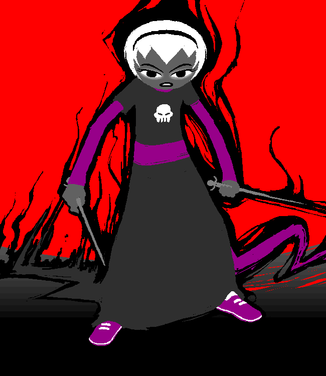
Jade pleads with Rose to stay with their plan. Rose instead considers confronting Jack directly, even knowing she will probably die.
At Scratch’s prompting, she asks the cue ball whether the HORRORTERRORS are evil. Its answer is unreadable to us. Rose becomes GRIMDARK, disappearing from Trollian’s view in the blackout Kanaya has been watching. She leaves for the Battlefield.
Recap #6
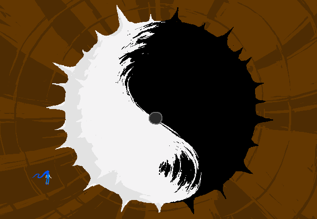
John reaches the Battlefield’s core and finds the TUMOR, a huge black-and-white bomb. Inside, a blue device counts down from TEN HOURS AND TWENTY-FIVE MINUTES.
Dad’s wallet proves useful on a cosmic scale: John captchalogues the entire thing and carries it back to the surface. The central piece of Rose’s Green Sun mission is finally in their hands.
Recap #6
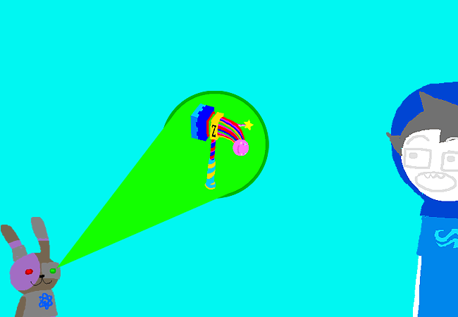
The robot bunny, LIV TYLER, reunites with John, accompanied by COURTYARD DROLL. A note from Jade’s pen pal explains that the bunny can shrink or enlarge its weapons using technology borrowed from his grandmother.
John suspects that grandmother is Jade. For now, the practical result is an enormous WARHAMMER OF ZILLYHOO. The mysterious gift has become equipment he can actually wield.
Recap #6
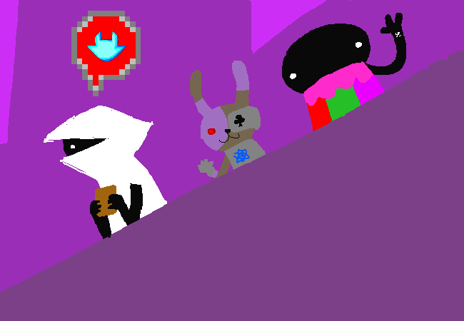
John raises the battleship and asks Liv to captain it. She shrinks it, and WV takes the wallet containing the Tumor. Their mission is to deliver the bomb to Rose’s dreamself on Derse’s moon. Courtyard Droll can help too, apparently.
John stays behind to find Dad. Unfortunately, his laptop leaves with the wallet. Jade’s warning about Rose arrives just as John loses his means of reading it.
Recap #6
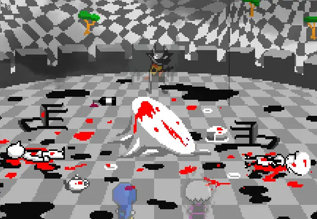
John and Rose meet face to face for the first time inside the castle. Rose can only speak in an eldritch language, so John struggles to understand what she is trying to tell him about their parents.
She leads him to the rooftop. There are Dad and Mom, dead, with Jack waiting between them. John’s long search ends in the reunion he never imagined.
Recap #6
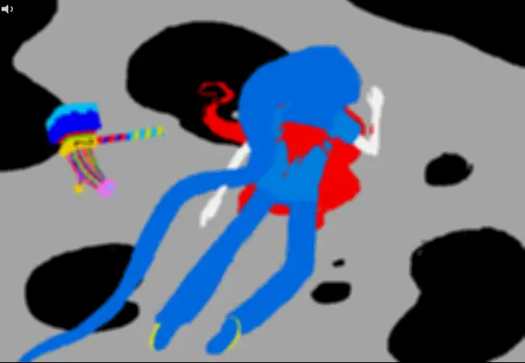
John and Rose prepare to attack. Jack immediately drives his sword through John’s chest. John falls dead again, this time in his god-tier body.
Rose attacks in fury. Her dark power collides with Jack’s First Guardian energy in an enormous explosion. The reading leaves the consequences of both the death and the battle unresolved.
Recap #6
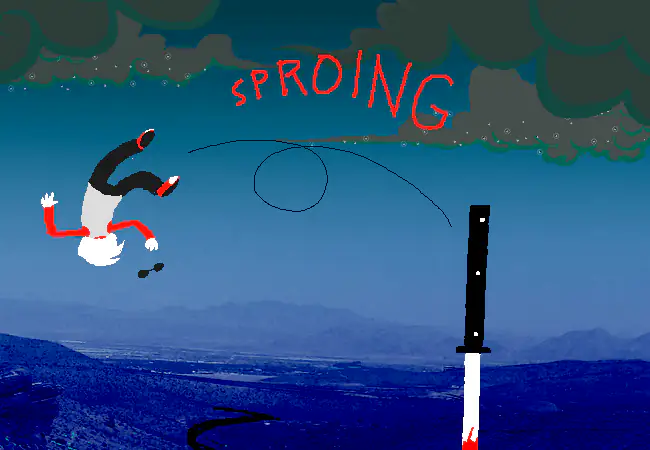
DAVE remains beside Bro’s body, talking with Terezi. He rejects the idea that being given a heroic title makes him a hero. His jokes do not offer her an easy way to tell what he is feeling.
He tries to snap Bro’s sword and is thrown back. Meanwhile, an insistent voice reaches him from an exile terminal: AR is issuing commands while preparing to blow up the Bec-shaped station. Terezi has a confrontation of her own to face.
Recap #6
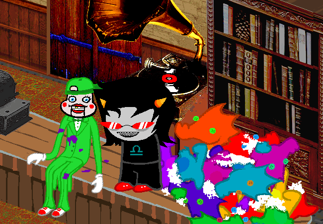
TEREZI finds Nepeta’s body and continues pursuing Vriska. Gamzee manipulates the trail, leaving a challenge in Vriska’s style and moving LIL’ CAL around her.
Following the apparent invitation drops her into a room of books, records, and old belongings. The evidence is being staged around her, but she still interprets it through her rivalry with Vriska.
Recap #6
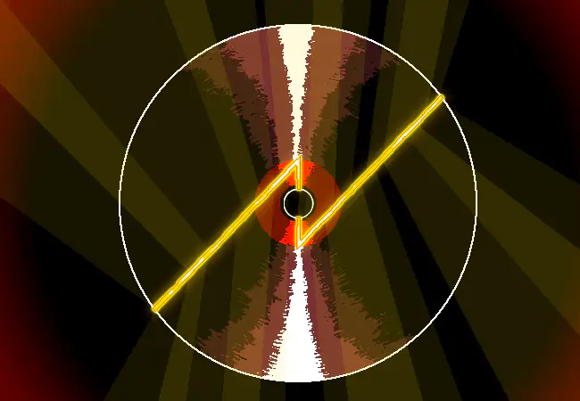
Homestuck announces the end of DISC 1, then loses DISC 2. Terezi finds the missing disc hidden in a Midnight Crew record sleeve.
She mistakes it for a tiny record and plays it on the phonograph, scratching its surface. She puts it back in the game’s portfolio, and the story continues with an increasingly damaged display. This particular Scratch is entirely literal.
Recap #6
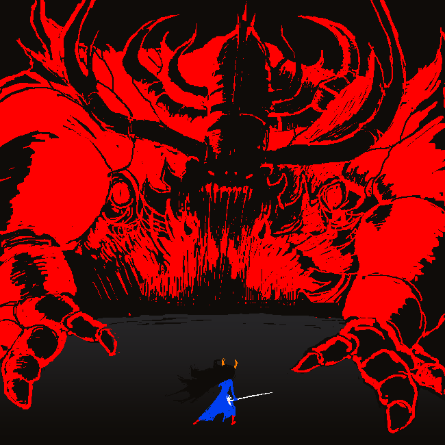
Terezi puts on her old REDGLARE outfit. Mindfang’s journal supplies the history behind the role: NEOPHYTE REDGLARE and her dragon, PYRALSPITE, destroyed the pirate’s fleet and cost her an arm and an eye.
At trial, Mindfang turned the crowd against Redglare through mind control and had her hanged. She then fought the monstrous judge and escaped. The old rivalry is a dangerous model for the one Terezi and Vriska are acting out.
Recap #6
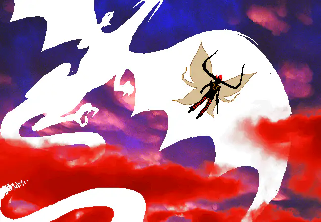
Mindfang received a mechanical arm from DARKLEER, who had also hidden her cue ball from Doc Scratch. She came to distrust the oracle’s selective answers: knowing her fate had made her careless.
Its prophecies named the SUMMONER, Tavros’s ancestor, as both her future lover and her eventual killer. Her account predicts that his rebellion will lead the Condesce to banish adult trolls from Alternia. Mindfang’s legacy carries a warning about the certainty Vriska longs for.
Recap #6
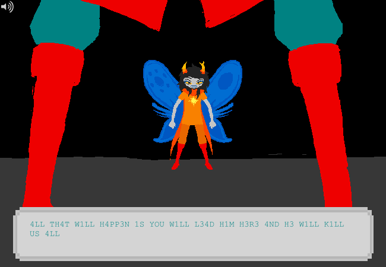
TEREZI finally confronts VRISKA. The scratched disc corrupts their words and images, but Vriska admits to killing Tavros and denies the other murders.
Terezi warns that fighting Jack will let him follow Vriska’s scent back to the meteor and kill the survivors. She says she has already seen that outcome in her mind’s eye.
Recap #6
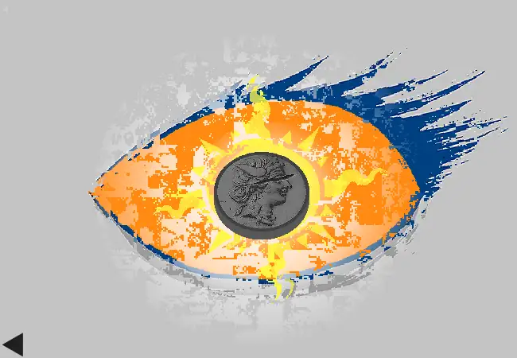
Terezi proposes a coin flip: HEADS, VRISKA STAYS; SCRATCH, SHE GOES. Vriska agrees, confident that the THIEF OF LIGHT cannot lose a game of luck.
The coin rises. The damaged scene loops. This reading stops before the result: John is dead again, Rose is fighting Jack, the Tumor is headed for Derse, and the trolls’ remaining lives hang on the confrontation.